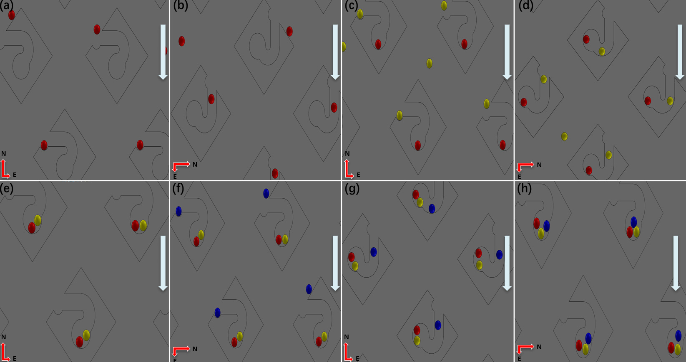

Key concept — two distinct locations
A trap pocket (24.55 µm aperture) is the capture site — it holds exactly one cell during spinning. A co-location chamber (57.83 µm diameter) is the shared storage site downstream. After 90° indexing, the centrifugal force re-aligns with a 30 µm transfer channel connecting the two — cells are driven by centrifugal sedimentation from the trap pocket through the transfer channel into the co-location chamber. The trap pocket is then empty and ready for a second cell population.

Fig 1.1 — Sequential three-population capture workflow.
(a–b) Red cells (Pop. 1) loaded at 0°, captured in trap pockets, then platform rotates 90° — red cells driven through the transfer channel into co-location chambers. Platform returns to 0°.
(c–e) Yellow cells (Pop. 2) loaded at 0°, captured in the now-empty trap pockets, then indexed 90° into co-location chambers alongside red cells. Platform returns to 0°.
(f–h) Blue cells (Pop. 3) loaded at 0°, captured in trap pockets, then relocated into co-location chambers — all three populations co-located.
1
Primary Capture
Platform at 0°. 5 Hz centrifugal force (≈ 5.4 g) drives cells into the 24.55 µm trap pocket. A lodged cell acts as a hydrodynamic plug, steering subsequent cells to neighbouring empty trap pockets.
2
Mechanical Indexing
Spring-loaded latch actuates the 86:22 gear train, rotating the chip carrier exactly 90° and aligning the centrifugal vector with the internal transfer channels.
3
Cell Relocation
The same body force pushes captured cells through the 30 µm transfer channel into the 57.83 µm co-location chamber — trap pockets are now empty for a second cell population.